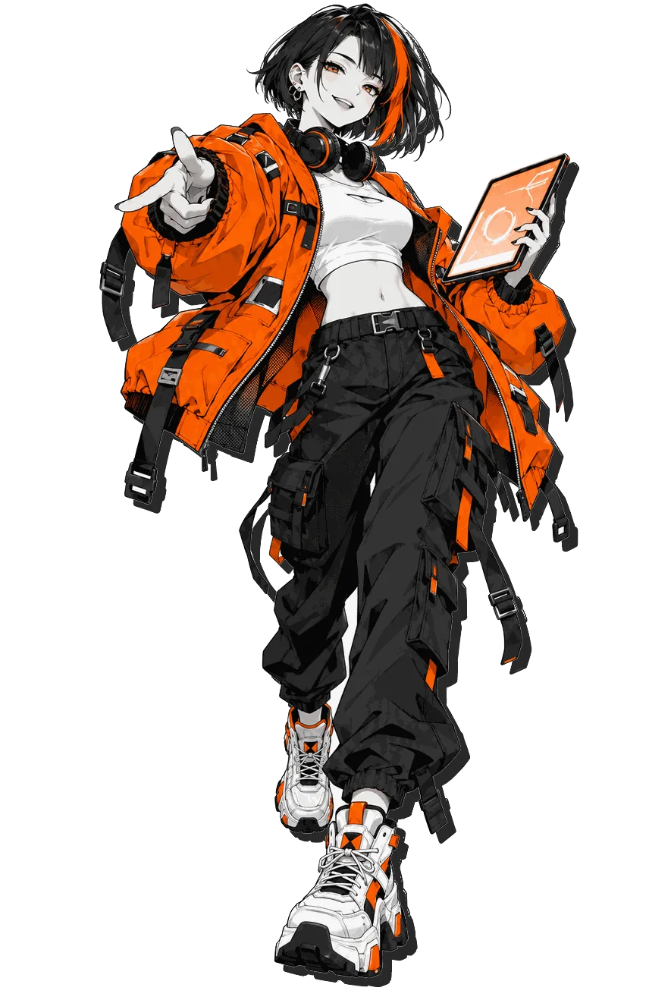

3D Tilt
01
Vol.01网页动效图鉴 · 2026
Motion
动效图鉴Field
Guide
Guide
网页上那些让你“哇”一声的瞬间，都有名字。
按一下、拖一下、悬停一下，导览员会告诉你它叫什么、怎么做的。

Hover me ↘
MLX-0001-2026
01
按钮展厅Hall 01 · Press · 12 Exhibits
动效速度 Speed1.00x
02
光标展厅Hall 02 · Cursor · 5 Exhibits
把鼠标变成力、轨迹和光。
X-RAY ON → 看见原理
Attraction field＋
靠近一点，让按钮追过来。手机轻点空白处
Distance → image＋
划过展柜，留下一串瞬间。手机轻点，展开图片
Signal found / 03
用光，找出暗处的内容。手机轻点，让光移动
✳Hidden in
plain sight.
plain sight.
01 / 遮罩02 / 插值03 / 光的范围
● Light control
内容一直都在。
只让光照到的部分显现。
OTHER
SIDE.↗Explore
Difference / 混合反色SIDE.↗Explore
Custom Cursor
Make
your mark.惯性轨迹 / 划过或轻点
your mark.惯性轨迹 / 划过或轻点
Cursor Trail
03
文字展厅Hall 03 · Type · 5 Exhibits
同一句话，换一种出场方式。
Edit → Replay → Copy
One character at a time
Ready / 08 characters
空格换行
Stagger
● Signal locked
Ready / 13 characters
A—Z / 0—9
Locked
MOTION
Weight 100 → 900Variable Font Wave
IN
MOTION.IN
MOTION.
Clip → FillMOTION.IN
MOTION.
Text Mask Reveal
字符间隔 65ms
Typewriter
04
滚动展厅Hall 04 · Scroll · 5 Exhibits
你的滚轮，就是时间轴。
Play → Understand → Copy
Layer 01 / 0.15 · 02 / 0.45 · 03 / 0.90
IN MOTION
远
CITYIN MOTION
04NEAR / 街区观察站 ↗
Parallax
Scroll to advance / 钉住现场
01 / Approach走进
街区。↘
街区。↘
- 01 / APPROACH走进街区。
画面钉住，滚动开始变成时间。
↘ - 02 / OBSERVE停下看一眼。
位置不动，让内容进入下一幕。
◎ - 03 / CONTINUE带着灵感走。
时间轴走完，画面跟着页面离开。
↗
Pinned Scroll
Vertical input → Horizontal output
Frame / 01PASS
Frame / 02THROUGH
Frame / 03THE
Frame / 04CITY
Horizontal Scroll
Progress → clip / 向下滚动
LOOK
CLOSER.
CLOSER.
Scroll Reveal
Velocity → skew / 快速滚动试试
FAST
FORWARD.
FORWARD.
Scroll Velocity Skew
End of route / 05 → Change the scene ↓
05
转场展厅Hall 05 · Transition · 4 Exhibits
让前后两个状态，接得上。
Play → Understand → Copy
First → Last → Invert → Play
FLIP Layout
点击图片 / 同一张图，两个位置
Shared Element
Cover → Swap → Reveal
Scene / 01DAY
SHIFT.☀
SHIFT.☀
Curtain / Wipe
Browser transition
Station / 01ON
THE AIR.✳
THE AIR.✳
View Transitions API
06
着色器展厅Hall 06 · Shader · 4 Exhibits
触碰画面，改变像素的走向。
Play → Understand → Copy
Pixel laboratory / 06NOTHING
STAYS STILL✳
STAYS STILL✳
水波、噪声、色彩、粒子。
四种方式，让平面有了触感。
LIQUID
SIGNAL
Pointer → ripple正在准备画面SIGNAL
Hover Distortion
BETWEEN
FRAMES
Noise → displacement正在准备画面FRAMES
Displacement Transition
FLOW
STATE
Three colors / slow flow正在准备画面STATE
Noise Gradient
FORM / 06
Touch → scatter → gather正在准备画面Particles to Shape
06 / 07 · Next stop: timing ✳
07
节奏展厅Hall 07 · Timing · 4 Exhibits
慢一点，弹一点，再干脆一点。
Feel → Tune → Copy
MAKE IT
FEEL RIGHT.
FEEL RIGHT.
手感可以说清楚。
先并排感受，再把差别调出来。
曲线不同，路程相同。
匀速LINEAR
0 → 1
先快后慢EASE-OUT
0 → 1
慢起慢停EASE-IN-OUT
0 → 1
多走一点BACK
0 → 1
落地弹跳BOUNCE
0 → 1
你的曲线CUSTOM
0 → 1
Drag the handles / 拖动控制点
横轴是时间，纵轴是路程。
控制点越过终点，就会多走一点。
READY / 36
松手，看看它怎么停下来。
SOFT ↔ CRISP ↔ JELLY
READY / 37
一起出发，感受快慢。SAME DISTANCE / SAME EASING
READY / 38
一个接一个，也是一种节奏。
01每↗
02个↗
03瞬↗
04间↗
05都↗
06有↗
07名↗
08字↗
FIRST LAST / 间隔决定节奏
READY / 39
07 / 08 · Next stop: gesture ↗
ROUTE / 08TOUCH. RELEASE. REPEAT.↘
08
手势展厅Hall 08 · Gesture · 4 Exhibits
拖、甩、停、撞。
Made for your fingertips.
A LITTLE FRICTION. A LOT OF FEEL.FEEL IT
IN YOUR HANDS.
IN YOUR HANDS.
让摩擦和重量，有了触感。
用手指，也用鼠标。↓ DRAG → RELEASE ↗
拖住卡片，再松手。FRICTION FIELD / 40← DRAG / RELEASE →
READY / 40
拖住卡片，再松手。
SOFT LIMIT
BEYOND / BACK / AGAINREADY / 41
拖住卡片，再松手。← SKIPKEEP →VELOCITY IS THE DECISION.
READY / 42
从列表往下拉，越过刻度后松手。
RELEASE LINE
↻往下拉 ↓READY / 43
08 / 08 · Take the feeling with you ↗
Collection收藏进度 8 / 8
已认识 0 / 43 件
八个展厅，四十三件可玩的动效。点选一个街区，接着逛。
INPUT / RESTORE / REPLAY
把手感带回来。
把复制的口令粘在这里。
回到那件展品，接着调。
Hall 01 ↗按钮12 件 · 已开放已认识 0 / 12
Hall 02 ↗光标5 件 · 已开放已认识 0 / 5
Hall 03 ↗文字5 件 · 已开放已认识 0 / 5
Hall 04 ↗滚动5 件 · 已开放已认识 0 / 5
Hall 05 ↗转场4 件 · 已开放已认识 0 / 4
Hall 06 ↗着色器4 件 · 已开放已认识 0 / 4
Hall 07 ↗节奏4 件 · 已开放已认识 0 / 4
Hall 08 ↗手势4 件 · 已开放已认识 0 / 4
FEELING DIRECTORY / 43
从感觉开始找。
名字还不知道，手感先记住。
多选标签，找同时符合的动效。
这几种手感，暂时没有交集。
少选一个标签，再看看。